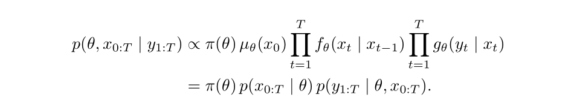
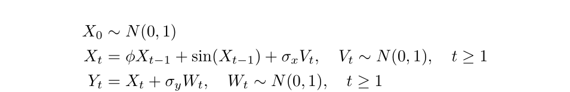

bayesSSM is an R package offering a set of tools for performing Bayesian inference in state-space models (SSMs). It implements the Particle Marginal Metropolis-Hastings (PMMH) in the main function pmmh for Bayesian inference in SSMs.
Why bayesSSM?
While there are several alternative packages available for performing Particle MCMC, bayesSSM is designed to be simple and easy to use. It was developed alongside my Master’s thesis about Particle MCMC, since I was implementing everything from scratch anyway.
Why PMCMC?
In some state-space models, the full joint density of the parameters and the latent states

can be written out explicitly. In these cases, inference tools like Stan (which uses Hamiltonian Monte Carlo) are very efficient.
However, many real-world models define the latent dynamics only through a simulator, not via an explicit transition density. This includes:
- Epidemic models with stochastic transmission dynamics
- Agent-based models
- Ecological or physical systems with complex latent dynamics
In these cases, the joint posterior density cannot be computed directly, and the marginal likelihood is intractable. Thus, standard MCMC methods like Hamiltonian Monte Carlo (HMC) or Metropolis-Hastings (MH) cannot be applied directly.
Particle Markov Chain Monte Carlo (PMCMC) methods, such as the Particle Marginal Metropolis-Hastings (PMMH) implemented in this package, are designed to handle these situations. They use particle filters to approximate the marginal likelihood and allow for efficient sampling from the joint posterior density.
State-space Models
A state-space model (SSM) has the structure given in the following diagram, where we omitted potential time dependency in the transition and observation densities for simplicity.

The core function, pmmh, implements Particle Marginal Metropolis-Hastings, which is an algorithm that first generates a set of N particles to approximate the intractable marginal likelihood and then uses this approximation in the acceptance probability. The implementation automatically tunes the number of particles and the proposal distribution for the parameters.
Installation
You can install the latest stable version of bayesSSM from CRAN with:
install.packages("bayesSSM")or the development version from GitHub with:
# install.packages("pak")
pak::pak("BjarkeHautop/bayesSSM")Example
To illustrate how to use the pmmh function, we will simulate a simple state-space model (SSM) and perform Bayesian inference on it. Note: While this example uses pmmh, the model is simple enough that standard MCMC methods could also be applied. For a more complicated example where standard MCMC methods cannot be used, see the article Stochastic SIR Model here.
We will simulate a state-space model with the following structure:

Let’s first simulate 20 data points from this model with \phi = 0.8, \sigma_x = 1, and \sigma_y = 0.5.
set.seed(1405)
t_val <- 20
phi <- 0.8
sigma_x <- 1
sigma_y <- 0.5
init_state <- rnorm(1, mean = 0, sd = 1)
x <- numeric(t_val)
y <- numeric(t_val)
x[1] <- phi * init_state + sin(init_state) +
rnorm(1, mean = 0, sd = sigma_x)
y[1] <- x[1] + rnorm(1, mean = 0, sd = sigma_y)
for (t in 2:t_val) {
x[t] <- phi * x[t - 1] + sin(x[t - 1]) + rnorm(1, mean = 0, sd = sigma_x)
y[t] <- x[t] + rnorm(1, mean = 0, sd = sigma_y)
}
x <- c(init_state, x)We define the priors for our model as follows:
We can use pmmh to perform Bayesian inference on this model. To use pmmh we need to define the functions for the SSM and the priors.
The functions init_fn, transition_fn should be functions that simulate the latent states. init_fn must contain the argument num_particles for initializing the particles, and transition_fn must contain the argument particles, which is a vector of particles, and can contain any other arguments for model-specific parameters.
The function log_likelihood_fn should be a function that calculates the log-likelihood of the observed data given the latent state variables. It must contain the arguments y for the data and particles. Time dependency can be implemented by giving a t argument in transition_fn and log_likelihood_fn.
init_fn <- function(num_particles) {
rnorm(num_particles, mean = 0, sd = 1)
}
transition_fn <- function(particles, phi, sigma_x) {
phi * particles + sin(particles) +
rnorm(length(particles), mean = 0, sd = sigma_x)
}
log_likelihood_fn <- function(y, particles, sigma_y) {
dnorm(y, mean = particles, sd = sigma_y, log = TRUE)
}The priors for the parameters must be defined as log-prior functions. Every parameter from init_fn, transition_fn, and log_likelihood_fn must have a corresponding log-prior function.
log_prior_phi <- function(phi) {
dunif(phi, min = 0, max = 1, log = TRUE)
}
log_prior_sigma_x <- function(sigma) {
dexp(sigma, rate = 1, log = TRUE)
}
log_prior_sigma_y <- function(sigma) {
dexp(sigma, rate = 1, log = TRUE)
}
log_priors <- list(
phi = log_prior_phi,
sigma_x = log_prior_sigma_x,
sigma_y = log_prior_sigma_y
)Now we can run the PMMH algorithm using the pmmh function. For this README we use a lower number of samples and a smaller burn-in period, and also modify the pilot chains to only use 200 samples. This is done to make the example run faster.
library(bayesSSM)
result <- pmmh(
pf_wrapper = bootstrap_filter, # use bootstrap particle filter
y = y,
m = 500, # number of MCMC samples
init_fn = init_fn,
transition_fn = transition_fn,
log_likelihood_fn = log_likelihood_fn,
log_priors = log_priors,
pilot_init_params = list(
c(phi = 0.4, sigma_x = 0.4, sigma_y = 0.4),
c(phi = 0.8, sigma_x = 0.8, sigma_y = 0.8)
),
burn_in = 50,
num_chains = 2,
seed = 1405,
tune_control = default_tune_control(pilot_m = 200, pilot_burn_in = 10)
)
#> Running chain 1...
#> Running pilot chain for tuning...
#> Using 50 particles for PMMH:
#> Running Particle MCMC chain with tuned settings...
#> Running chain 2...
#> Running pilot chain for tuning...
#> Using 50 particles for PMMH:
#> Running Particle MCMC chain with tuned settings...
#> Warning in pmmh(pf_wrapper = bootstrap_filter, y = y, m = 500, init_fn =
#> init_fn, : Some ESS values are below 400, indicating poor mixing. Consider
#> running the chains for more iterations.
#> Warning in pmmh(pf_wrapper = bootstrap_filter, y = y, m = 500, init_fn = init_fn, :
#> Some Rhat values are above 1.01, indicating that the chains have not converged.
#> Consider running the chains for more iterations and/or increase burn_in.We get convergence warnings as expected due to the small number of iterations.